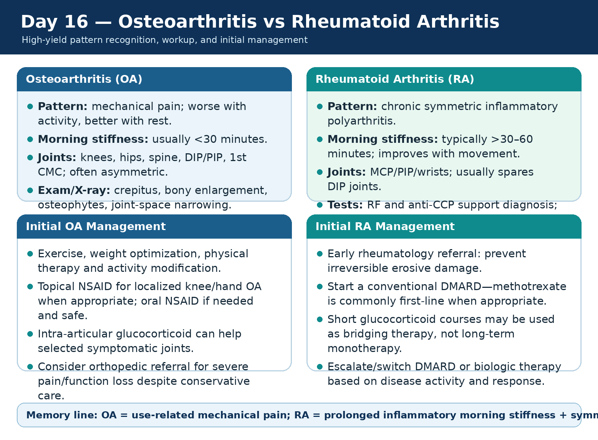
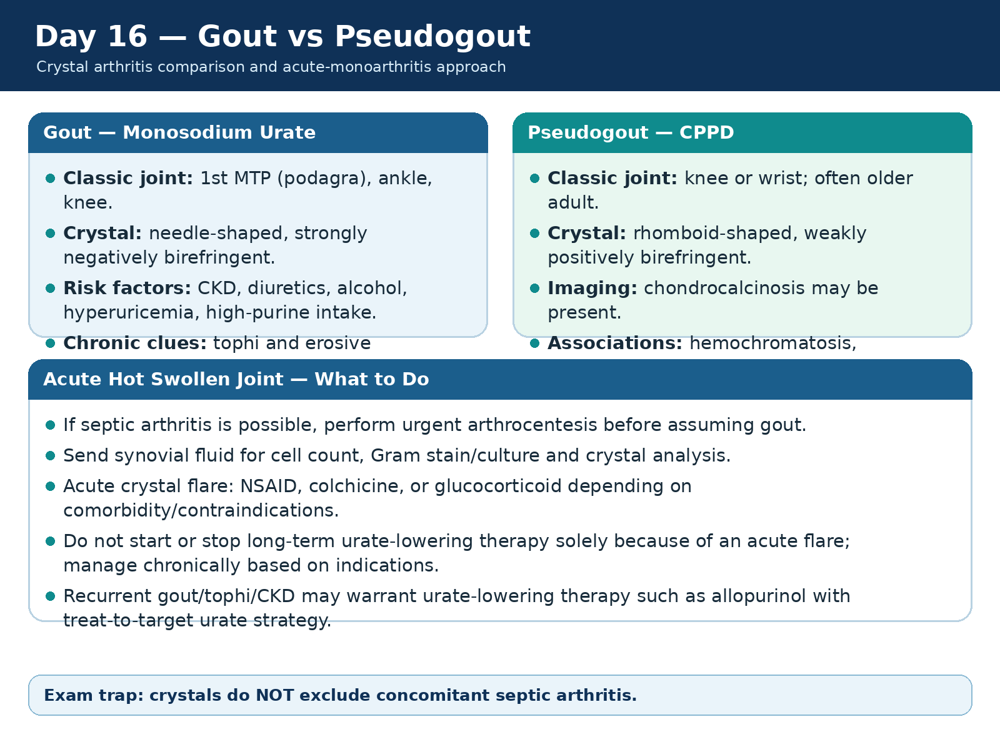
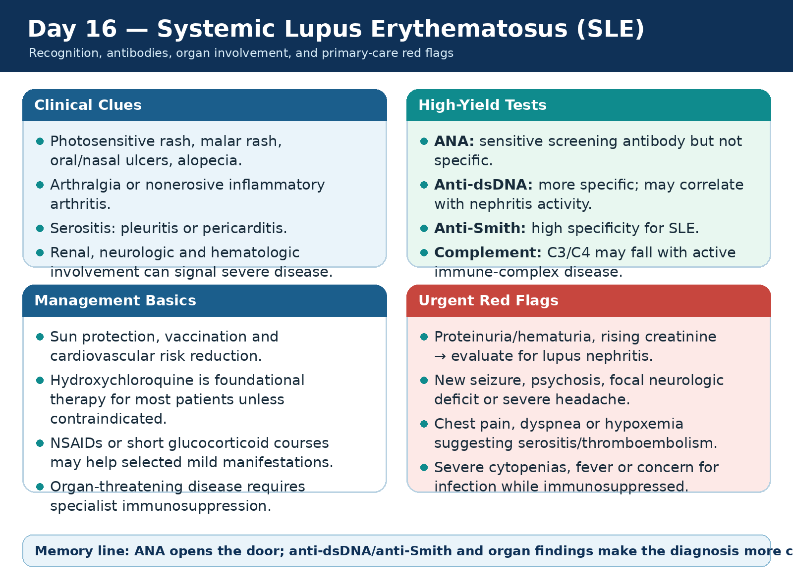
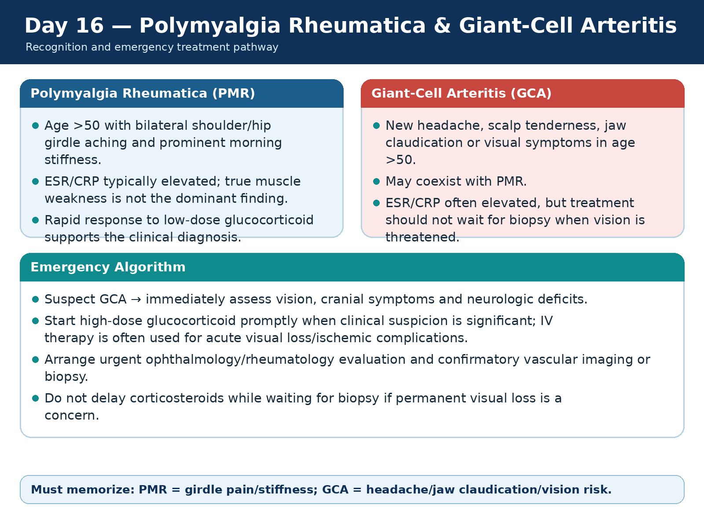
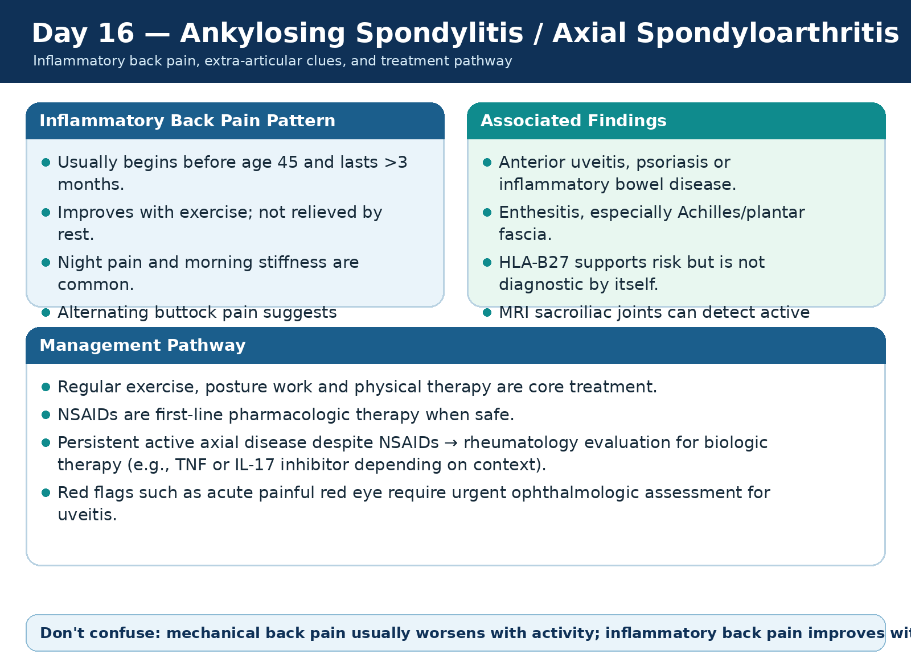
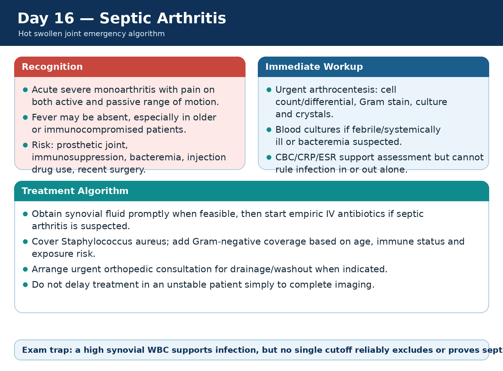
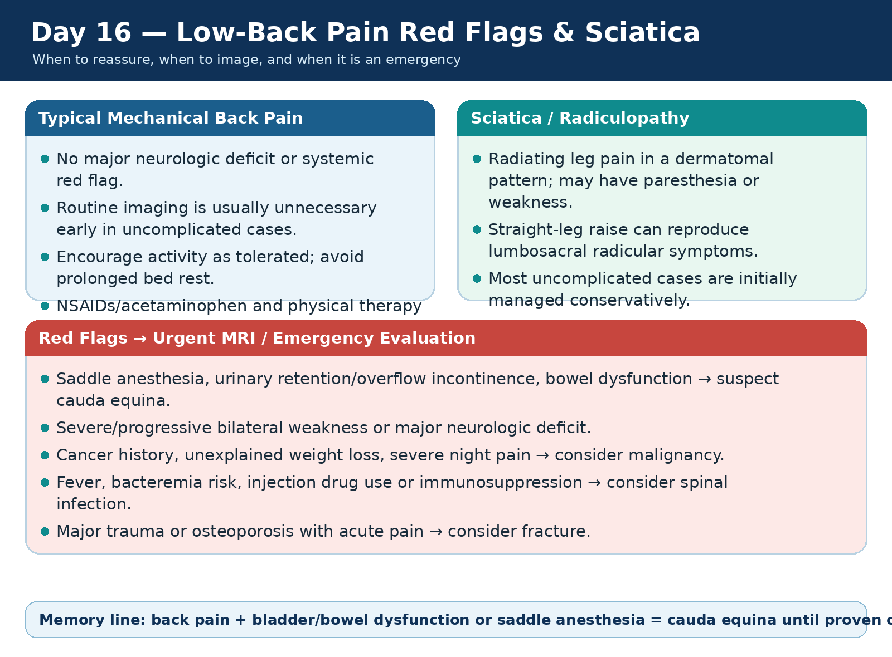
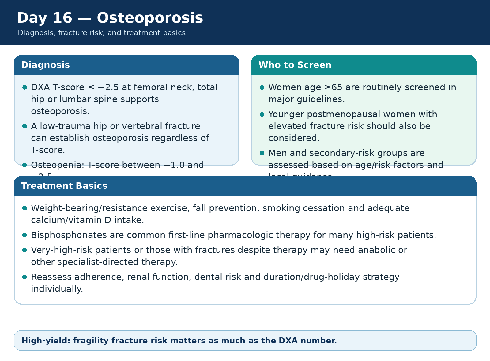
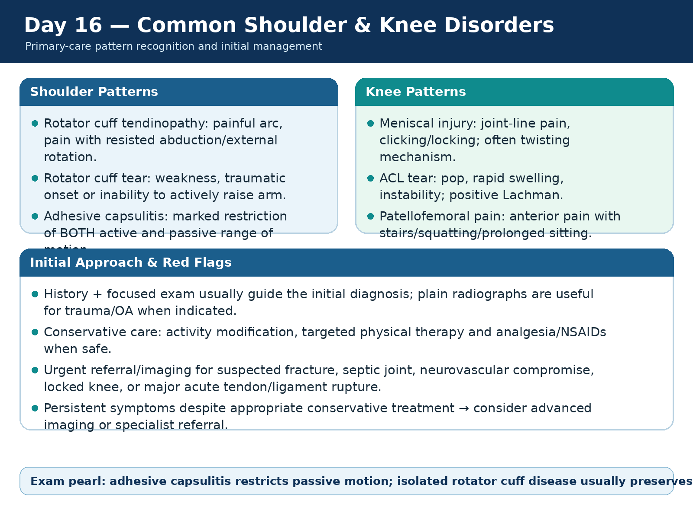

🦴 Inflammatory Arthritis, Crystal Disease, Bone Health & MSK Red Flags
OA vs RA, crystal arthritis, SLE, PMR/GCA, axial spondyloarthritis, septic arthritis, back pain, osteoporosis, and common shoulder/knee disorders.
90 questions
Osteoarthritis vs Rheumatoid Arthritis
High-yield physician-level review for Day 16 Rheumatology & Musculoskeletal Medicine.
Pattern recognition
- OA causes mechanical pain: worse with use, better with rest; morning stiffness is usually brief (<30 min).
- RA causes chronic inflammatory synovitis with prolonged morning stiffness and symmetric small-joint involvement.
- OA often affects DIP/PIP, 1st CMC, knees and hips; RA classically targets MCP/PIP/wrists and usually spares DIP joints.
Diagnosis
- OA is primarily a clinical/radiographic diagnosis: osteophytes, joint-space loss and subchondral sclerosis support it.
- RA: RF and anti-CCP support diagnosis; anti-CCP is more specific. ESR/CRP help assess inflammation but normal values do not fully exclude RA.
- Persistent synovitis should prompt early rheumatology referral to avoid erosive damage.
First-line management
- OA: exercise, weight optimization, physical therapy and topical/oral NSAIDs when safe; injections or surgery may be needed for refractory disease.
- RA: disease-modifying therapy is required; methotrexate is commonly first-line when appropriate.
- Glucocorticoids can be short bridging therapy in RA but should not replace DMARD treatment.
Common traps
- Pain alone does not equal RA; look for true synovitis.
- Do not treat RA chronically with NSAIDs alone—they improve symptoms but do not prevent erosions.
- Acute hot monoarthritis is not typical OA/RA: consider crystal disease or septic arthritis.
🦴 OA vs RA High-Yield Comparison
Click to open/close.
Gout vs Pseudogout
High-yield physician-level review for Day 16 Rheumatology & Musculoskeletal Medicine.
Classic presentation
- Gout: abrupt severe monoarthritis, classically 1st MTP (podagra), ankle or knee.
- CPPD/pseudogout: often knee or wrist in an older adult; may mimic gout or septic arthritis.
- Both can cause intense erythema, warmth and swelling.
Diagnosis
- Synovial crystal analysis is the diagnostic standard when the diagnosis is uncertain or infection is possible.
- Gout: needle-shaped, strongly negatively birefringent monosodium urate crystals.
- CPPD: rhomboid-shaped, weakly positively birefringent calcium pyrophosphate crystals; chondrocalcinosis may be seen on imaging.
Treatment
- Acute flare: NSAID, colchicine or glucocorticoid based on comorbidity/contraindications.
- Recurrent gout/tophi/CKD may warrant urate-lowering therapy; allopurinol is commonly first-line with treat-to-target urate strategy.
- CPPD chronic prevention is less straightforward; treat flares and evaluate associated metabolic disorders when appropriate.
Emergency pitfall
- Crystals do not exclude concomitant septic arthritis.
- If infection is plausible, obtain Gram stain/culture and manage urgently.
- Serum urate may be normal during an acute gout flare.
🦴 Gout vs Pseudogout
Click to open/close.
Systemic Lupus Erythematosus
High-yield physician-level review for Day 16 Rheumatology & Musculoskeletal Medicine.
Recognition
- SLE is a multisystem autoimmune disease; common clues include photosensitive rash, oral ulcers, inflammatory arthritis, alopecia and serositis.
- Renal, neurologic and hematologic involvement can indicate organ-threatening disease.
- Pregnancy, thrombosis and infection risk can complicate management.
High-yield antibodies & labs
- ANA is sensitive but not specific.
- Anti-dsDNA and anti-Smith are more specific; anti-dsDNA may track lupus nephritis activity in some patients.
- Low complement, urine protein/hematuria, cytopenias and inflammatory markers help assess activity and organ involvement.
Management
- 2025 ACR guidance supports hydroxychloroquine for most patients unless contraindicated and emphasizes minimizing glucocorticoid exposure.
- Mild manifestations may use NSAIDs/topical therapy/short steroid courses; organ-threatening disease requires immunosuppressive therapy and specialist care.
- Sun protection, vaccines and cardiovascular risk reduction are important long-term measures.
Red flags
- Proteinuria/hematuria or rising creatinine → evaluate for lupus nephritis.
- New neurologic symptoms, severe cytopenias, chest pain/dyspnea or fever while immunosuppressed require urgent assessment.
- Do not attribute fever automatically to lupus flare—infection must be considered.
🦴 SLE High-Yield Review
Click to open/close.
Polymyalgia Rheumatica & Giant-Cell Arteritis
High-yield physician-level review for Day 16 Rheumatology & Musculoskeletal Medicine.
Polymyalgia rheumatica
- Usually age >50 with bilateral shoulder/hip girdle aching and prolonged morning stiffness.
- ESR/CRP are often elevated; true muscle weakness is not the key feature.
- A rapid response to low-dose glucocorticoid supports the diagnosis but does not replace evaluation for mimics.
Giant-cell arteritis clues
- New headache, scalp tenderness, jaw claudication or visual symptoms in an older adult are classic.
- PMR and GCA commonly overlap.
- Temporal artery ultrasound/biopsy and vascular imaging support diagnosis depending on local pathways.
Treatment
- Suspected GCA requires prompt high-dose glucocorticoid treatment to reduce ischemic visual complications.
- Acute visual loss or threatened vision often requires emergency specialist management and IV glucocorticoid therapy.
- Do not delay steroids while waiting for biopsy when suspicion is high.
Must-not-miss
- Transient visual symptoms, diplopia or permanent vision loss are emergencies.
- Stroke or aortic involvement can occur in large-vessel disease.
- Age <50 makes classic GCA very unlikely.
🦴 PMR & Giant-Cell Arteritis Algorithm
Click to open/close.
Ankylosing Spondylitis / Axial Spondyloarthritis
High-yield physician-level review for Day 16 Rheumatology & Musculoskeletal Medicine.
Inflammatory back pain
- Onset often before age 45; symptoms persist >3 months.
- Pain improves with exercise and may worsen with rest; night pain and prolonged morning stiffness are common.
- Alternating buttock pain suggests sacroiliitis.
Associated clues
- Anterior uveitis, psoriasis, inflammatory bowel disease and enthesitis are high-yield associations.
- HLA-B27 supports risk but is not diagnostic on its own.
- MRI sacroiliac joints can show inflammation before radiographic sacroiliitis is visible.
Management
- Exercise and physical therapy are core treatment.
- NSAIDs are first-line pharmacologic therapy when safe.
- The 2026 ACR axial SpA guideline supports escalation to biologic therapy for persistent active disease despite appropriate first-line therapy.
Red flags / traps
- Pain that improves with rest and worsens with activity is more mechanical than inflammatory.
- Acute painful red eye may be anterior uveitis and needs urgent ophthalmologic review.
- Do not diagnose axial SpA from HLA-B27 alone.
🦴 Ankylosing Spondylitis / Axial SpA
Click to open/close.
Septic Arthritis
High-yield physician-level review for Day 16 Rheumatology & Musculoskeletal Medicine.
Classic presentation
- Acute monoarthritis with severe pain, warmth, swelling and pain with both active and passive motion.
- Fever may be absent, especially in older or immunocompromised patients.
- Risk factors include prosthetic joints, bacteremia, immunosuppression, recent surgery and injection drug use.
Urgent diagnostics
- Arthrocentesis is central: cell count/differential, Gram stain, culture and crystals.
- Blood cultures are appropriate when bacteremia/systemic illness is suspected.
- No single synovial WBC cutoff perfectly rules septic arthritis in or out.
Treatment
- Obtain synovial fluid promptly when feasible, then start empiric IV antibiotics if suspicion is significant.
- Cover Staphylococcus aureus; broaden Gram-negative coverage based on host and exposure risk.
- Urgent orthopedic consultation is often needed for drainage/washout.
Exam traps
- Crystals do not exclude infection.
- Do not delay antibiotics in an unstable patient just to complete imaging.
- A normal serum WBC or lack of fever does not exclude septic arthritis.
🦴 Septic Arthritis Emergency Algorithm
Click to open/close.
Low-Back Pain Red Flags & Sciatica
High-yield physician-level review for Day 16 Rheumatology & Musculoskeletal Medicine.
Uncomplicated low-back pain
- Most acute mechanical low-back pain does not require immediate imaging.
- Encourage activity as tolerated and avoid prolonged bed rest.
- Analgesia/NSAIDs and physical therapy are common conservative options depending on patient factors.
Sciatica / radiculopathy
- Dermatomal leg pain with paresthesia or weakness suggests nerve-root irritation.
- Straight-leg raise can reproduce lumbosacral radicular symptoms.
- Most cases without severe/progressive deficit are initially managed conservatively.
When to image
- MRI is indicated urgently when cauda equina, infection, malignancy or major progressive neurologic deficit is suspected.
- Trauma/osteoporosis may require imaging for fracture.
- Persistent symptoms despite conservative care may warrant later imaging or specialist referral.
Red flags
- Urinary retention/overflow incontinence, saddle anesthesia or bowel dysfunction → cauda equina emergency.
- Cancer history/weight loss/night pain → malignancy concern.
- Fever, bacteremia risk, injection drug use or immunosuppression → spinal infection concern.
🦴 Low-Back Pain & Sciatica Algorithm
Click to open/close.
Osteoporosis
High-yield physician-level review for Day 16 Rheumatology & Musculoskeletal Medicine.
Diagnosis & screening
- DXA T-score ≤−2.5 supports osteoporosis at relevant sites; osteopenia is −1.0 to −2.5.
- A low-trauma hip or vertebral fracture may establish osteoporosis even without a T-score ≤−2.5.
- 2025 USPSTF: screen women ≥65; screen younger postmenopausal women who are at increased fracture risk after risk assessment.
Risk factors
- Age, prior fragility fracture, low BMI, smoking, alcohol excess, family history and falls increase risk.
- Secondary causes include glucocorticoids, hypogonadism, malabsorption and selected endocrine disease.
- FRAX can help estimate fracture probability when treatment threshold is uncertain.
Treatment
- Weight-bearing/resistance exercise, fall prevention, smoking cessation and adequate calcium/vitamin D intake are foundational.
- Bisphosphonates are common first-line pharmacologic therapy for many high-risk patients.
- Very-high-risk patients may need anabolic or other specialist-directed therapy.
Safety / traps
- Fragility fracture risk matters more than DXA alone.
- Check renal function and contraindications before bisphosphonate therapy.
- Long-term therapy duration and drug holidays should be individualized.
🦴 Osteoporosis Screening & Treatment
Click to open/close.
Common Shoulder & Knee Disorders
High-yield physician-level review for Day 16 Rheumatology & Musculoskeletal Medicine.
Common shoulder patterns
- Rotator cuff tendinopathy: painful arc and pain with resisted abduction/external rotation.
- Rotator cuff tear: weakness, traumatic onset or inability to actively elevate arm; passive ROM may be relatively preserved.
- Adhesive capsulitis: marked loss of BOTH active and passive ROM.
- Biceps tendinopathy: anterior pain/tenderness in bicipital groove.
Common knee patterns
- Meniscal injury: joint-line pain, clicking/locking, often after twisting.
- ACL tear: pop, rapid hemarthrosis/swelling and instability; Lachman is high yield.
- Patellofemoral pain: anterior pain with stairs, squatting or prolonged sitting.
- Knee OA: activity-related pain, crepitus and bony enlargement.
Initial management
- Focused history/exam usually guide initial diagnosis; plain radiographs are useful for trauma or OA when indicated.
- Activity modification, targeted physical therapy and NSAIDs/analgesia when safe are common first-line strategies.
- 2025 AAOS guidance supports structured nonoperative care for many rotator cuff injuries, with surgery based on tear pattern, function and response.
Urgent referral
- Suspected fracture, septic joint, neurovascular compromise, locked knee, or major acute tendon/ligament rupture needs urgent evaluation.
- Persistent weakness or mechanical symptoms despite conservative care may require MRI/specialist review.
- Do not confuse adhesive capsulitis with cuff disease: passive ROM is restricted in adhesive capsulitis.
🦴 Common Shoulder & Knee Disorders
Click to open/close.
Day 16 completion
Mark complete after reviewing the 9 topics and your practice blocks.